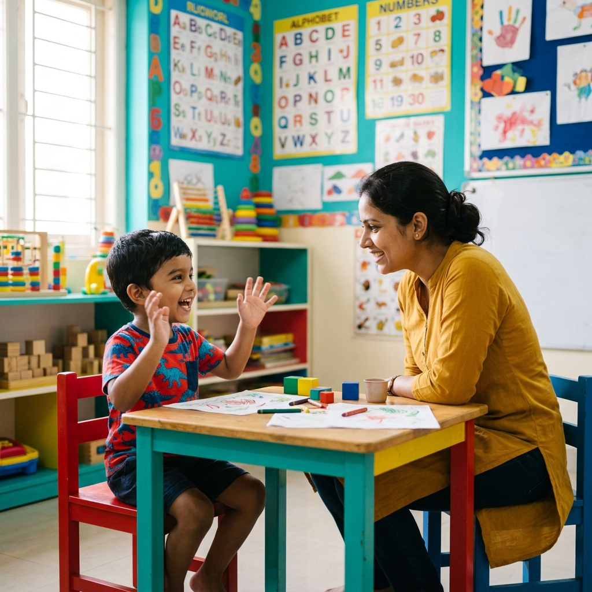

From age 2, language form begins to develop in earnest. Children begin to master the rules of grammar. Morphological and syntactic development lead to longer and more complex utterances. The variety of meanings a child can express also expands as grammar allows them to make comparisons, refer to things in the past and present tense, and construct questions.
24–30 Months: Simple Questions and Early Grammar
From age 2, children begin to understand and use questions about "what", "who", and "where". Utterances are still simple, made up of 2 to 3 words: "What that?", "Who that?", "Where Mummy go?". The question is expressed with rising intonation to indicate inquiry.
At this stage, the functional grammatical elements of utterances are still missing — such as auxiliaries (is, will, did) and determiners (a, the). Children begin to approximate some auxiliaries with productions such as "gonna" (going to), "wanna" (want to), and "gotta" (got to). Language is made up mostly of content words — nouns and verbs.
Negations are expressed more effectively, using a wider range of words: "can't", "don't", and "not" are used in addition to "no".
More pronouns are used, including "my", "me", "mine", and "you". Note that these mostly refer to the self — understanding of pronouns referring to others develops later in preschool language development.
30–36 Months: Vocabulary Explosion and Sentence Structure
By 36 months (3 years), 50% of children will have an expressive vocabulary of 900–1,000 words! The milestone (achieved by 90% of children) is 250 words.
The vocabulary contains more pronouns that refer to people other than the self: "your", "she", "he", "yours", and "we". Spatial terms (prepositions) also develop with understanding and use of "in", "on", and "under".
The ability to question develops further, with the ability to ask basic yes/no questions and more wh-questions including "why?" — a milestone that many parents find both exciting and exhausting!
Sentences more consistently contain functional grammatical components and therefore have more complete structure. This is a crucial phase of child grammar development.
36–42 Months: Descriptions and Comparisons
Vocabulary continues to expand to include understanding and use of:
- Colour words (red, yellow, blue)
- Kinship terms that indicate familial relationships ("sister", "brother", "aunty", "uncle")
Children begin to understand and use basic comparatives of "same" and "different" and can compare themselves to others — a sign of growing cognitive and linguistic development.
Understanding is also developing about the semantic relationships between sentences. These relationships are expressed through connectors:
- Additive — "and"
- Temporal — "then"
- Causal — "because"
- Contrastive — "but"
The ability to link ideas across sentences is a major leap in preschool speech and language development — it allows children to tell simple stories and explain events.
42–48 Months: Complex Questions and Vocabulary Depth
By 48 months (4 years), a child acquires use and understanding of the more complex question forms: "when" and "how". Understanding of basic between-sentence relationships develops to expression with use of basic conjunctions "and" and "because".
Vocabulary now includes understanding and use of:
- Shape words (triangle, square, circle)
- Size words (big, small)
- Temporal terms (before, after)
- Complex pronouns (its, our, him, myself, yourself, ours, their, theirs)
By the later preschool ages, children can understand new semantic relationships including:
- Coordination — words categorised based on similarity (moth, butterfly)
- Superordination — words that represent a category (animal → dog)
- Antonymy — opposite words (rough, smooth)
- Synonymy — words with similar meaning (small, tiny, little)
Parent-Friendly Milestone Guide
Here's a quick reference for preschool language milestones from age 2 to 4:
| Age | What You Might Notice |
|---|---|
| 24–30 months (2–2.5 years) |
Your child begins asking simple questions such as "What's that?", "Who's that?", and "Where mummy go?". They start using short 2–3 word sentences, words like "mine", "me", and "you", and may use "no", "don't", or "can't" to express refusal or disagreement. |
| 30–36 months (2.5–3 years) |
Your child's vocabulary grows rapidly. They begin using longer sentences, ask more questions (including "why?"), understand and use location words such as "in", "on", and "under", and talk about other people using words like "he", "she", and "we". |
| 36–42 months (3–3.5 years) |
Your child learns more descriptive words, including colours (red, blue) and family words (brother, sister, aunty, uncle). They begin comparing things using concepts such as same and different, and can explain simple ideas using words like "and", "then", "because", and "but". |
| 42–48 months (3.5–4 years) |
Your child asks more complex questions such as "when?" and "how?". They understand and use words about shapes (circle, square, triangle), size (big, small), and time (before, after). Their sentences become longer, clearer, and more detailed. |
When Should You Consult a Speech Therapist?
Consider seeking a professional assessment for language delay if your child:
- Is not combining words into 2–3 word phrases by age 2.5
- Has difficulty being understood by unfamiliar adults by age 3
- Does not ask questions by age 3
- Cannot follow simple 2-step instructions by age 3
- Shows frustration or behavioural difficulties related to communication challenges
- Has limited use of pronouns, prepositions, or conjunctions by age 4
At Rapture Therapy Centre in Rajarajeshwari Nagar, Bangalore, our pediatric speech-language pathologists specialise in preschool language assessments and therapy. We use evidence-based approaches to support children in building grammar, vocabulary, and conversational skills.
Is Your Preschooler's Language On Track?
Book a comprehensive language assessment at Rapture Therapy Centre. Our team evaluates grammar, vocabulary, sentence construction, and comprehension skills to create a tailored therapy plan.
Book an Assessment